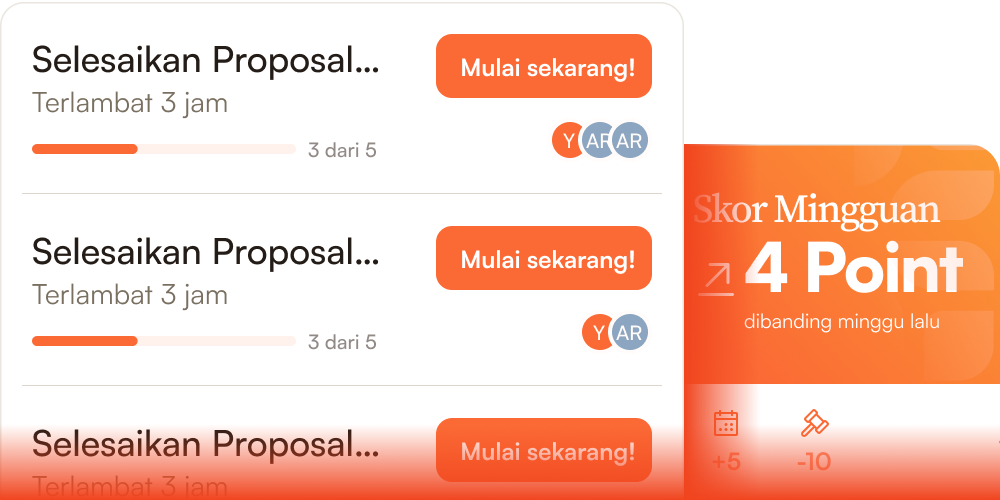
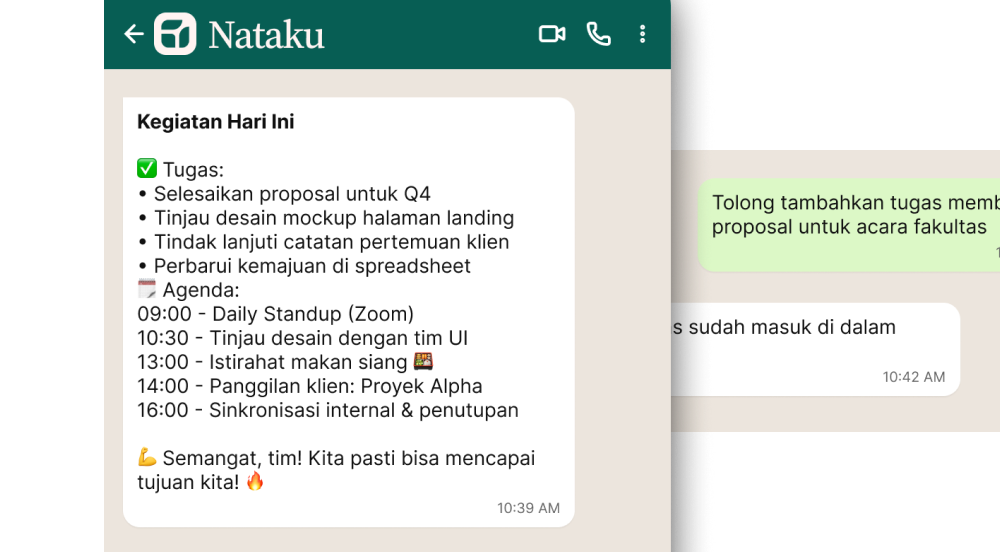

[Category Badge / Pill Tag]
Sistem Prioritas Harian
[Primary Headline]
Today's Focus
[Subheadline / Core Value Hook]
Maksimal 3 hal terpenting. Beres tanpa rasa overwhelmed.
[Core Mechanism Description]
Layar utama Nataku memangkas puluhan to-do list yang menumpuk menjadi maksimal 3 aksi nyata per hari. Menghentikan siklus mencatat segalanya di awal semester tapi berakhir tidak ada yang terselesaikan.
[Key Value Highlights / Proof Points]
3
Rule of 3 Prioritas
Kunci 1–3 tugas berdampak tinggi agar energimu fokus pada eksekusi, bukan panik melihat tumpukan tugas.
Skor Produktivitas 60-25-15
Evaluasi terukur setiap hari: Task (60 pt), Agenda (25 pt), dan Streak Konsistensi (15 pt) tanpa tebak-tebak buah manggis.
Backlog Aman & Terfilter
Tugas masa depan tersimpan rapi di backlog, hanya muncul saat waktunya dieksekusi agar tidak mengaburkan fokus.

[Category Badge / Pill Tag]
Manajemen Waktu & Deadline
[Primary Headline]
Calendar Integrated
[Subheadline / Core Value Hook]
Bebas panik H-1 jam. Semua jadwal & tugas dalam satu kanvas visual.
[Core Mechanism Description]
Bukan sekadar kalender pasif. Nataku menyatukan jadwal kuliah, kegiatan organisasi, dan tenggat tugas ke dalam satu timeline visual yang langsung memberi sinyal urgensi sebelum terlambat.
[Key Value Highlights / Proof Points]
Hitung Mundur Berkode Warna
Warna kuning untuk deadline hari ini, merah menyala untuk kondisi mendesak (<24 jam). Sisa waktumu selalu terbaca sekilas.
Grid Bulanan & Agenda Harian Terpadu
Navigasi mulus antara pemetaan makro seluruh semester dan rincian jam perkuliahan hari ini dalam satu layar.
Tab Tampilan Fleksibel (Bulan, Minggu, Gantt)
Sesuaikan sudut pandangmu dengan tab praktis: pantau timeline tugas besar atau susun jadwal mingguan tanpa repot.

[Category Badge / Pill Tag]
Asisten Chat & Eksekusi Cepat
[Primary Headline]
WhatsApp Daily &
Quick Action
[Subheadline / Core Value Hook]
Asisten produktivitas langsung di ruang chat yang kamu buka tiap hari.
[Core Mechanism Description]
Mengatasi alasan nomor satu aplikasi to-do ditinggalkan: lupa membuka aplikasinya. Nataku menyapa langsung di WhatsApp, mengirim pengingat, dan mencatat tugas tanpa perlu login ulang.
[Key Value Highlights / Proof Points]
Morning Digest 07:00 WIB
Terima rekap tugas dan jadwal terpenting otomatis setiap pagi langsung di chat sebelum kamu mulai beraktivitas.
Interaksi Chat Dua Arah
Cukup balas chat untuk centang tugas selesai (“selesai 1”) atau catat hal baru tanpa perlu membuka aplikasi.
Input Multimodal Cerdas (Foto & Audio)
Kirim foto silabus/jadwal untuk langsung diubah jadi to-do terstruktur, atau kirim voice note saat sedang di perjalanan.
